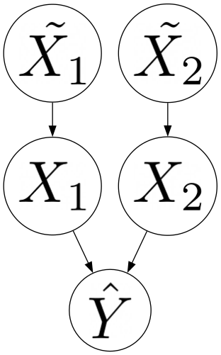

flowchart
A{Level}
A -->|model| B[Marginal]
A -->|World| C{question}
C -->|associative| D[observational]
C -->|interventional| E[interventional]
C -->|counterfactual| F[interventional]
4 Shapley Explanations
Shapley explanations are a broad class of techniques characterized by their use of the Shapley value from cooperative game theory as the building block for generating quantitative explanations. Methods differ in how the underlying game is defined, how the Shapley values are estimated, and as a result, how those values should be interpreted when used as a model explanation. In this section, we reexamine the Shapley-based model explanation literature from a causal perspective using our evaluation framework, with a particular focus on the specific types of target explanatory questions that can be addressed by each method and the additional considerations, information, and assumptions required to do so.
4.1 Overview
The key differentiator between Shapley explanations is how the underlying game – as defined by the payout, players, and the value function – is formulated. Before getting into the specifics of each method, we review how each of these components has been adapted to the task of generating model explanations, and in the case of specifying a value function, how this choice can be reframed using a causal perspective in the context of our evaluation framework.
The definition of the payout is directly related to the scope of the resulting explanation. In cooperative game theory, the payout is the value received by the coalition of players when they cooperate. When applied to model explanations, the payout is a numeric attribute of the model such as its accuracy, variance explained, or the value that the model predicts for a particular input. When the payout is defined in terms of a model prediction, the result is a local explanation, which is an explanation of a particular instance. In contrast, global explanations address model behavior in the aggregate. Payouts defined in terms of model performance (e.g. accuracy, variance explained, etc.) lead to global explanations. However, in some cases, global explanations can be constructed from local ones, for example, by averaging local explanations across all predictions. In this work, we are primarily interested in Shapley methods that yield local explanations; however, we briefly cover methods that generate global explanations as well.
In the vast majority of cases, a model’s features are treated as the players in the game and groups of players constitute a coalition. When reviewing a particular method, we will omit this detail from our discussion except in those cases where a different formulation is used.
For the remainder of this paper we use the following notation1:
- \(D\): The set of features \(\{1, 2, ..., D\}\)
- \(S\): A subset of features, \(S \subseteq D\)
- \(f\): The machine learning model, \(f(x_1, x_2, ..., x_N)\)
- \(\mathbf{X}\): a multivariate random variable \(\{X_1, X_2, ..., X_N\}\)
- \(\mathbf{x}\): a set of values \(\{x_1, x_2, ..., x_N\}\)
- \(\mathbf{X}_S\): the set of random variables \(\{X_i: i \in S\}\)
- \(\mathbf{X}_{\bar{S}}\): the set of random variables \(\{X_i: i \notin S\}\)
- \(\mathbf{x}_S\): the set of values \(\{x_i: i \in S\}\)
- \(\mathbf{x}_{\bar{S}}\): the set of values \(\{x_i: i \notin S\}\)
4.1.1 Value Function
The most consequential aspect of the game formulation is the value function. As noted previously, the value function specifies the payout for every subset of players. Since most machine learning models cannot make predictions when inputs are missing (as is the case for any coalition besides the grand coalition), the value function must provide a replacement value for every feature that is not part of the coalition. In essence, it must simulate what happens when features are removed from the model (Janzing, Minorics, and Blöbaum (2019), Merrick and Taly (2020), Covert (2020)). The brute-force approach is to avoid simulating altogether and apply the same learning algorithm (and hyperparameters) to every subset of features, effectively training \(2^N\) separate models where \(N\) is the number of features. Other alternatives include replacing the missing value with a fixed value (e.g. zero), a value from a reference data point, or the expected value over a collection of data points (reference distribution). Each of these alternatives to the brute force approach can be thought of as a special case of the last option (Merrick and Taly (2020), Sundararajan and Najmi (2020)). However, there are numerous ways to select a reference distribution, which has generated significant debate over which choice is the correct one.
Within our evaluation framework, the correct reference distribution is the one aligned with the target explanatory question, which is defined by the intended level of explanation and whether it is associative, interventional, or counterfactual. Shapley-based methods can be used to provide either model or world level explanations. However, much of the Shapley explanation literature implicitly assumes one of the two and fails to recognize the existence or validity of the other. There are two notable exceptions: Basu (2020) makes a similar distinction using what they call “modes of interpretation” and Wang, Wiens, and Lundberg (2021) introduce the notion of “boundaries of explanation,” which captures a similar idea. Failure to clearly distinguish between these different levels of explanation has fueled the debate over which reference distribution is correct. Before discussing particular methods, we revisit the different classes of reference distributions used by various Shapley methods and the types of explanatory questions that each can address.
Reference distributions can be categorized as unconditional or conditional based on whether they consider features jointly or independently. In cases where features are independent – a situation that is rarely, if ever, true in practice – this distinction is irrelevant and the resulting Shapley values for both types are equivalent. Conditional value functions can be further categorized based on whether they are observational or interventional. Each of these three classes of reference distribution (unconditional, observational conditional, and interventional conditional) yield Shapley explanations at a particular level (model or world) that can be used to address particular types of target explanatory questions when interpreted correctly (see Figure 4.1).
Value functions based on an observational conditional distribution replace missing features with values that are consistent with the observed relationships among features.
\[ v(S) = E[f(\mathbf{X}) | \mathbf{X}_S = \mathbf{x}_s] \tag{4.1}\]
This choice of reference distribution is unable to distinguish between correlation that is due to a causal effect and correlation due to confounding (i.e. spurious correlation). As a result, the Shapley values generated by methods that use this formulation are only able to address associative world-level target explanatory questions.
In contrast, value functions based on an interventional conditional distribution replace missing features with values that are consistent with the causal relationships between features.
\[ v(S) = E[f(\mathbf{X}) | do(\mathbf{X}_S = \mathbf{x}_s)] \tag{4.2}\]
However, methods based on this type of value function may require the practitioner to provide auxiliary causal information depending on the type of explanatory question. As noted in the background section on causality, interventional questions require a GCM and counterfactual questions require an SCM.
Finally, value functions based on an unconditional reference distribution replace individual feature values independent of the values of other features.
\[ v(S) = E[f(\mathbf{x}_S, \mathbf{X}_{\bar{S}})] \tag{4.3}\]
In our view, this type of reference distribution is appropriate for generating model-level explanations as it effectively ignores real-world causal relationships by assuming feature independence. As noted previously, the model itself is sufficient for addressing associative, interventional, and counterfactual questions so no auxiliary causal information is required.
Janzing, Minorics, and Blöbaum (2019) make the case that a causal perspective supports using a marginal reference distribution in all cases. To make their point, they introduce a distinction between real-world (“true”) features \(\tilde{X_1}, \tilde{X_2}, ..., \tilde{X_n}\) and features that serve as input to the model \(X_1, X_2, ..., X_n\) (see Figure 4.2). Model features have no causal relationships (e.g. are independent) even if causal relationships exist between their real-world counterparts. Using this setup, they show that the backdoor criterion is satisfied and the interventional conditional value function (Equation 4.2}) yields identical Shapley values as an unconditional one (Equation 4.3}).

In our view, the causal perspective assumed by Janzing, Minorics, and Blöbaum (2019) is limited because it implicitly assumes that all target explanatory questions can be addressed through model-level explanations. To illustrate the point, consider a model that takes loan amount, income, and savings account balance as inputs and predicts risk of default. The question “What if I resubmit by loan application and say my income is \(X\)?’’ likely has a model-level intention, while a question like “What if I increase my income to \(X\)” is targeting a world-level explanation. If higher income is causally related to savings account balance (e.g. always depositing a fixed percentage of income), the answer to the second question is not necessarily the same as the first. In our evaluation framework, part of what makes an explanation correct is that it aligns with the target explanatory question. Therefore, understanding the explainee’s desired level of explanation is critical
The adoption of the Janzing-style causal perspective with its failure to adequately distinguish between levels of explanation has led to an unfortunate pattern in the literature where the terms interventional, marginal, and unconditional are used interchangeably. Since this equivalence only applies to model-level explanations, we use the term interventional only when a causal perspective is intentionally adopted.
4.1.2 Indirect Influence
Differentiating between model and world-level explanations also helps to resolve the ongoing “indirect influence” debate in the Shapley explanation literature. The key question behind this debate is whether a real-world feature that exhibits only an indirect influence on the model should be assigned a Shapley value of zero. Another way to frame this question is: should a feature that is not functionally used by the model be considered irrelevant when providing a model explanation?
One school of thought argues that Shapley-based attributions should assign zero importance to irrelevant features. Let \(X_1, X_2\) be two features and consider the model \(f(x_1, x_2) = x_2\). The model \(f\) clearly does not functionally depend on \(x_1\) and therefore, the argument goes, \(x_1\) is irrelevant. Numerous authors have demonstrated that when a value function based on a conditional expectation (observational or interventional) is used (see example 3.3 from Sundararajan and Najmi (2020), section 2 from Merrick and Taly (2020), and example 1 from Janzing, Minorics, and Blöbaum (2019)), irrelevant features may receive non-zero attributions. They argue that a non-zero attribution is both counterintuitive and constitutes an apparent violation of the dummy axiom. Merrick and Taly (2020) demonstrates the practical implications of this violation for assessing fairness. Consider two models that make decisions about who should be hired by a moving company. Model A exclusively considers the applicant’s gender, a protected category, while model B takes both gender and the applicant’s lifting capacity into account. If gender and lifting capacity are correlated and a conditional method is used, both gender and lifting capacity receive non-zero attributions in model A even though lifting capacity is functionally irrelevant. They argue that these attributions hide the degree of bias in the model’s decisions. Sundararajan and Najmi (2020) provides a different view, suggesting that these attributions may lead practitioners to incorrectly believe that a model is sensitive to a protected feature. It is also possible to construct scenarios in which attributions appear to violate the symmetry (Sundararajan and Najmi (2020) and Merrick and Taly (2020)), and linearity (Sundararajan and Najmi (2020)) axioms. Opponents of methods based on a conditional value function use these violations and their implications for assessing model fairness to support the use of marginal SHAP methods, which will never assign a non-zero attribution Merrick and Taly (2020) to an irrelevant feature.
Model fairness considerations have also been used to justify conditional Shapley methods. Adler et al. (2016) propose a method for auditing black box models for indirect influence, which they argue has implications for assessing algorithmic fairness. They provide an example of auditing a model used to approve home loans to ensure that race does not have an undue influence on the outcome. Even if the model does not functionally depend on race, it may include other variables (e.g. zipcode) that serve as proxies for race, allowing race to have an indirect influence on the model. From this standpoint, conditional Shapley methods that assign non-zero attributions to features that are not explicitly included in the model is a desirable property.
Both sides acknowledge that the choice of value function is directly related to the indirect influence debate. The underlying implication in the literature is that practitioners should use their belief about the right solution to the indirect influence debate to select a value function. In our view, the value function should be selected to align with the target explanatory question, which requires understanding the level of explanation that is sought. If a model-level explanation is desired, then an unconditional value function is appropriate and, as a result, irrelevant features will receive zero attributions. Conversely, if it is a world-level explanation that that explainee is after, then a conditional method is appropriate and it is not only permissible, but desirable, that irrelevant features receive non-zero attributions.
4.2 Global Explanatation
Shapley-based model explanations arose out of the relative feature importance literature where the resulting importances can be viewed as a global model explanation. These methods formulate the game by treating features as players and the total variance explained as the payout. We briefly review these historical roots because the developments in this literature foreshadow those that occurred later when Shapley-based methods were developed to generate local explanations.
4.2.1 Linear Models
The earliest Shapley-based model explanation methods were developed to quantify relative feature importance for linear models2. The first such method (LMG) was made known by Kruskal (1987), but originated with Lindeman, Merrenda, and Gold (1980), who suggested that relative feature importance be computed by averaging the contributions of each feature to the total variance explained over all possible orderings of the features. They justified this computationally-expensive approach by demonstrating that other approaches for computing relative feature importance (e.g. comparing the magnitude of the regression coefficients or decomposing total variance using semipartial correlations) yield different values depending on the order in which features are considered. However, the connection between LMG and the Shapley value was not made explicit until Stufken (1992). In what was largely a re-invention of LMG, Lipovetsky and Conklin (2001) introduced Shapley Net Effects, but explicitly appealed to the axiomatically-grounded Shapley value from cooperative game theory to justify their approach. One critique of LMG and Shapley Net Effects was that functionally-irrelevant features could receive a non-zero relative importance when features are dependent. In response, Feldman (2005) introduced the proportional marginal variance decomposition PMVD method, which weights permutations of features in a data-dependent way such that functionally-irrelevant features are assigned zero importance. These concerns are the precursor to the indirect influence debate, albeit without that particular terminology.
4.2.2 Black-Box Models
A related, but more general, line of research uses the Shapley value to estimate relative feature importance for arbitrary black-box models by attributing the model’s total variance explained to individual features. Owen (2014) introduced a Shapley-based method for decomposing the variance of the output of a model, which was later named Shapley Effect by Song, Nelson, and Staum (2016). To simplify computation, Shapley Effect assumes feature independence and computes Sobol indices in order to provide an upper and lower bound for the exact Shapley value. Recognizing the limitation of assuming feature independence, Song, Nelson, and Staum (2016) extended this approach to handle dependent features. They propose an algorithm to approximate the Shapley value that extends Castro, Gómez, and Tejada (2009) and involves two levels of sampling in order to estimate the necessary conditional variances: sampling feature permutations and sampling from the empirical distribution. Owen and Prieur (2017) provides conceptual backing to Song, Nelson, and Staum (2016), making the case that the Shapley value is the correct approach to estimating feature importance when features are dependent. The primary alternative, they argue, is a version of ANOVA, which avoids the feature independence assumption, but introduces conceptual problems. First, importances can be negative, which the authors argue is counter-intuitive. Moreover, the possibility of negative importances allows for a variable that is not functionally used by a model to receive non-zero importance. Owen and Prieur (2017) argues that the Shapley value is preferred because it avoids both of these limitations.
Questions about how to handle dependent features and whether functionally-irrelevant features should be attributed importance drove methodological advancements around the use of Shapley values to generate global model explanations. In both the linear and black-box settings, the earliest methods assumed feature independence with more complicated methods that could account for feature dependence coming later. Both literatures also contain arguments about the proper way to handle features that have an indirect influence on the output. In fact, one of the motivations for PMVD is a concern over the fact that LMG violates the dummy axiom (referred to as the exclusion axiom in the original work), which says that functionally irrelevant features should receive zero importance Grömping (2007). In discussing the merits of this concern, Grömping (2007) notes that the relevance of the dummy axiom depends on the purpose behind computing relative feature importance. If the purpose is to understand how much a feature contributes to a model’s predictions (e.g. a model-level explanation), then a feature that is not functionally used by the model should receive zero importance. On the other hand, if the purpose is to understand how real-world interventions impact the model (world-level explanations), then assigning non-zero importances to functionally irrelevant features is justified. As the previous section hopefully makes clear and the subsequent section will expand upon, each of these trends and debates have an analog in the Shapley-based local explanation literature.
4.3 Local Explanations
In this section, we review Shapley-based methods for generating local explanations through the lens of our evaluation framework. Much like the Shapley-based global explanation literature, the methods and associated debates in this literature are largely driven by two concerns: how to generate explanations when features are dependent, and whether features that the model does not explicitly depend upon should be part of an explanation. Our goal is to provide enough information about each of the methods – the type of explanatory questions they address, their underlying assumptions, and their limitations – to allow practitioners to produce correct Shapley-based explanations. For a summary of the methods, see Table 4.1.
| Method | Definition | Estimation | Level | Question |
|---|---|---|---|---|
| Shapley Regression Values (SRV) | observational conditional | observational conditional | world | associative |
| Shapley Sampling Values (SSV) | observational conditional | unconditional | model | counterfactual |
| KernelSHAP | observational conditional | unconditional | model | counterfactual |
| Conditional Kernel SHAP | observational conditional | observational conditional | world | associative |
| Baseline Shapley (BSHAP) | N/A | N/A | N/A | N/A |
| Quantitative Input Influence (causal-QII) | unconditional | unconditional | model | counterfactual |
| Distal Asymmetric Shapley Values (d-ASV) | observational conditional | N/A | N/A | |
| Proximate Asymmetric Shapely Values (p-ASV) | observational conditional | N/A | N/A | |
| Causal Shapley Values (CSV) | interventional conditional | interventional conditional | both | interventional |
| Shapley Flow (SF) | N/A | N/A | both | counterfactual |
| Recursive Shapley Values (RSV) | N/A | N/A | both | counterfactual |
4.3.1 Observational and Implicitly-Causal Methods
The earliest and most commonly-used methods leverage a purely observational approach to generating explanations. Many of these methods define a value function in one way, but estimate Shapley values that correspond to a different value function Kumar et al. (2020). For the purposes of evaluating the correctness of the resulting explanations, what matters is that the estimated Shapley values are aligned with the target explanatory questions. Most of these methods rely on some form of sampling to approximate the Shapley values. Following Merrick and Taly (2020), we advocate for quantifying the uncertainty in these estimates as part of generating the explanations. Merrick and Taly (2020) propose computing confidence intervals for the estimates; however, we note that other methods from the uncertainty quantification literature are worth exploring. Unfortunately, a review of those methods is outside the scope of this work.
4.3.1.1 Shapley Regression Values
E. Štrumbelj, Kononenko, and Robnik Šikonja (2009) proposed Interactions Methods for Explanations (IME), the earliest method for generating Shapley-based local explanations. The authors define the target Shapley values using a conditional observational value function (Equation 4.1) and estimate them by fitting separate models for each subset of features. Covert (2020) showed that this brute-force estimation procedure yields values that are aligned with the defined value function. Based on the estimation procedure, subsequent work refers to these as Shapley Regression Values (SRV). The resulting explanations are only able to address target explanatory questions on the first rung of the ladder of causality (associative/”how” questions).
4.3.1.2 Shapley Sampling Values
In follow up work, Strumbelj and Kononenko (2010) proposed a method that simulates feature removal using a product of uniform distributions, where the bounds for each uniform distribution are determined based on the minimum and maximum values in the training data. The resulting Shapley values are referred to as Shapley Sampling Values (SSV).
Let \(\mathcal{U(X_i)}\) refer to the uniform distribution associated with feature \(i\):
\[ \hat{v}(S) = E_{\Pi_{i\in D} \mathcal{U}(\mathbf{X}_i)}[f(\mathbf{x}_S, \mathbf{X}_{\bar{S}}] \tag{4.4}\]
The estimation procedure for SSV solves two problems with SRV: it does not require retraining an exponential number of models and does not require full access to the training data. However, since SSV relies on sampling to estimate the Shapley values, it is important – under our evaluation framework – to assess the variability of the resulting Shapley values. Merrick and Taly (2020) propose a method for generating confidence intervals for Shapley values that could be used. Methods from the uncertainty quantification literature are also relevant for this effort. The computational benefits of SSV also come at the cost of generating Shapley values that do not align with the intended value function (observational conditional) unless the features are independent. Therefore, the resulting explanations should not be used to answer associative world-level explanatory questions unless this assumption is validated. However, because the estimation procedure yields values that are unbiased with respect to an unconditional value function, they can be used (without additional assumptions) to address associative, interventional, and counterfactual model-level explanatory questions. The ability to do this comes from the fact that the model itself serves as the structural causal model required to answer such questions.
Erik Štrumbelj and Kononenko (2014) proposed additional improvements to the approximation algorithm using quasi-random and adaptive sampling. Since the primary contribution is an efficiency improvement in the approximation algorithm that relies on the same assumptions, we do not consider this a new method and the same considerations around quantifying the uncertainty of the estimates and interpreting the values correctly applies.
4.3.1.3 KernelSHAP
Lundberg and Lee (2017) introduced a new method for estimating Shapley values defined using a conditional observational value function, referred to as KernelSHAP, that uses weighted linear regression to simulate feature removal using a joint marginal distribution.
\[ \hat{v}(S) = E[f(\mathbf{x_s}, \mathbf{X}_{\bar{X}}] \tag{4.5}\]
KernelSHAP, like SSV, is a sampling-based estimator that requires an independence assumption for the resulting values to be unbiased with respect to the defined value function. Therefore, the same considerations around quantifying uncertainty and interpreting the values as explanations apply.
The authors also proposed the term Shapley Additive Explanations (SHAP), which has subsequently been used to refer to different concepts in the literature. The original paper uses the term to refer to the collection of methods that define the target Shapley value in terms of a conditional observational value function. By this definition, all of the methods we have discussed thus far (SRV, SSV, and KernelSHAP) are SHAP methods. However, the term has also been used to refer to the class of additive feature attribution methods – methods whose attributions sum to the model’s output. All of the methods that fall under the SHAP umbrella are additive feature attribution methods, however, there are other methods (both Shapley-based and otherwise) that fall under this more general category. In other cases, SHAP is used to refer to the KernelSHAP estimation procedure or the SHAP python package, which includes multiple estimation procedures. Although it is counter to current practice, we recommend against using the term SHAP because of its multiple meanings and because, by the original definition, it is redundant with simply defining the value function associated with a Shapley-based method.
4.3.1.4 Conditional KernelSHAP
Aas, Jullum, and Løland (2020)} developed an extension to KernelSHAP that estimates Shapley values corresponding to an observational conditional value function rather than an unconditional one. The authors propose four different ways to, more efficiently than SRV, approximate the required conditional distributions.
- Multivariate Gaussian distribution
- Gaussian copula
- Empirical conditional distribution
- Combination
The first option is best when the features are approximately normally distributed. When the features themselves are not normally distributed, but the dependence structure between them is well described by a normal distribution, the second option can be used. When neither the features nor their dependence structure can be described by a normal distribution, then the third option can be used. This option idea is similar to the smoothing-based approach suggested in Sundararajan and Najmi (2020) and involves taking an expectation over similar data points. The final option is to use one of the previous three alternatives depending on the number of features whose removal is simulated via conditioning. They note that using the empirical conditional distribution works well for a small number of conditioning variables, but one of the other three methods should be used otherwise.
The authors provide an empirical evaluation of the different alternatives using simulated data and find that for modest levels of correlation between features (\(\rho = 0.05\)), all of their proposed extension methods provide better approximations than KernelSHAP. The authors use this result to claim that explanations arising from KernelSHAP can be very wrong when features are dependent. Although it is not explicitly stated, their implicit definition of correctness is about how closely the method used to estimate the Shapley value approximates the values as defined.
In our view, it is better to treat KernelSHAP and Conditional KernelSHAP as approximating different value functions rather than as better and worse approximations of the same value function. Both estimators yield Shapley values that can be used to provide correct model explanations provided they are used to address the correct types of target explanatory questions. For Conditional KernelSHAP, the resulting Shapley values form the basis for explanations that can address world-level associative explanatory questions only. Like KernelSHAP and SRV, Conditional KernelSHAP relies on sampling, so the same considerations around uncertainty quantification apply. Conditional KernelSHAP requires one additional consideration: the degree to which the distributional assumption associated with the approximation technique is valid.
4.3.1.5 BShap
Sundararajan and Najmi (2020) were the first to explore Shapley-based explanations as a class of methods and discuss the apparent problems with an observational conditional value function. They show empirically how different methods that define the value function in the same way yield different Shapley values for a given feature, rendering the “uniqueness” result of the Shapley value practically meaningless. They solve this problem by proposing an alternative axiomatization that lends itself to a truly unique solution known as Baseline Shapley (BShap). This new axiomatization includes three new axioms (affine scale invariance, demand monotonicity, and proportionality) to the original three (dummy, symmetry, linearity) required to derive the original Shapley value.
BShap simulates feature removal by replacing their values with the values from some fixed baseline (\(\mathbf{x}'\)).
\[ \hat{v}(S) = f(\mathbf{x}_S, \mathbf{x}'_{\bar{S}}) \]
The authors also introduce an extension to BShap called Random Baseline Shapley (RBShap) that takes an expectation over a collection of baseline values drawn according to some distribution \(\mathcal{D}\).
\[ \hat{v}(S) = E_{\mathcal{D}}[f(\mathbf{x}_S, \mathbf{x}'_{\bar{S}}] \]
They show that various Shapley-based methods can be subsumed under RBShap depending on the choice of \(\mathcal{D}\) and for this reason, we treat RBShap as a unification approach rather than a separate Shapley-based method.
The authors were also the first in the Shapley-based local explanation literature to explore the theoretical and practical problems with defining the value function using an observational conditional value function. First, computing the necessary conditional expectations is computational challenging and fraught with additional complications. For example, using the training data to approximate the conditional distributions can be problematic due to sparsity. Conditioning on the “removed” features can be seen as filtering the training data down to those observations that agree with the instance being explained and then taking the expectation over the remaining observations. Especially when continuous variables are involved, the number of training data observations that match the instance to be explained is likely small. This sparsity problem means that the conditional expectation must, practically speaking, be estimated using some other approximation technique (e.g. one of the four alternatives noted in Aas, Jullum, and Løland (2020)). However, they note that these techniques either involve additional assumptions or computational complexity. Second, Sundararajan and Najmi (2020) showed that using an observational conditional expectation can lead to attributions that, under certain conditions, violate the Shapley axioms. In particular, they demonstrate that when features are correlated, a feature that is not functionally used by the model can receive a non-zero attribution, which violates the dummy axiom. As we saw earlier, the same argument was previously made in the Shapley-based global explanation literature, and is directly related to the indirect influence debate.
4.3.2 Causal Methods
In contrast to the previous section, the following methods all explicitly incorporate causal reasoning into the explanation-generating process. The primary differentiator between these methods are the causal assumptions and auxiliary causal information required in order to generate the Shapley values.
4.3.2.1 Causal Quantitative Input Influence (QII)
Datta, Sen, and Zick (2016) introduced a family of measures for quantifying how much the inputs to a system influence the outputs. The ultimate goal is to use these measures to generate a “transparency report” for individuals subjected to an automated decision. Reminiscent of trends (both earlier and contemporaneously) in the relative importance literature, they were interested in providing measures of influence that take the correlation between inputs into account. However, they were the first, in both the global and local Shapley-based explanation literature, to frame this objective in explicitly causal terms with their causal QII method. As the emphasis on treating the model as an input-output system makes clear, they were concerned with model-level explanations. They define causal QII using an unconditional value function and simulate feature removal using the product of the marginal distributions of removed features.
\[ v(S) = \hat{v}(S) = E_{\Pi_{i \in C} p(\mathbf{X}_i)}[f(\mathbf{x}_S, \mathbf{X}_{\bar{S}})] \]
Like other Shapley-based methods that approximate an unconditional value function, explanations derived from causal QII are able to address model-level counterfactual (rung 3) questions. Although causal QII is limited to model-level explanations, it does not require any auxiliary information. There are two main differences between QII and other methods that approximate an unconditional value function. First, causal QII uses a different marginalization method than either KernelSHAP or SSV. Second, causal QII is motivated by taking an explicitly-causal perspective rather than assuming feature independence in order to simplify computing values associated with an observational conditional value function. It is this second difference that Janzing, Minorics, and Blöbaum (2019) are honing in on when they argue that the use of an unconditional value function, as implicitly argued by the creators of causal QII, is justified by a causal perspective.
4.3.2.2 Asymmetric Shapley Values
Frye, Rowat, and Feige (2020) introduced the first method, Asymmetric Shapley Values(ASV) that leverages auxiliary causal information to generate Shapley-based explanations. They define the value function using an observational conditional expectation (Equation 4.1}). Recognizing the difficulty of providing (and defending) a full graphical causal model, ASV requires only a partial causal ordering of the features. For example, given a set of features \(X_1, X_2, ..., X_n\), a practitioner may provide the ordering \(\{X_1, X_2\}\) indicating that \(X_1\) is a causal ancestor of \(X_2\). In Distal Asymmetric Shapley Values (d-ASV), this causal information is included by assigning zero weight to any permutations (Equation 3.2})for which \(X_2\) precedes \(X_1\). They argue that this aligns with explanations that attribute effects to root causes. Alternatively, Proximate Asymmetric Shapley Values (p-ASV) assigns zero weight to any permutations for which \(X_1\) precedes \(X_2\) such that attributions favor immediate causes. The non-uniform weighting of the permutations results in values that violate the symmetry axiom, which corresponds to a quasivalue from cooperative game theory.
One problem with ASV is that a single causal ordering is consistent with multiple graphical causal models. For example, the ordering \(\{X_1, X_2\}\) is consistent with both (Figure 3.1 (a)) and (Figure 4.3). If the goal is to generate attributions that recover the causal relationship between \(X_1\) on \(Y\), these differences in the underlying graphical causal models are relevant (require different conditioning variables to satisfy the backdoor criterion), but are not accounted for in ASV. As a result, Heskes et al. (2020) note that even though ASV incorporates causal information, it can sometimes lead to improper (i.e. counter-intuitive) causal explanations.
The Shapley values generated by ASV do not map cleanly onto the types of explanatory questions as we have defined based on Pearl-style causality. ASV is not able to address model-level explanations because the estimated Shapley values do not align with an unconditional value function. When any partial causal ordering is provided, ASV is not able to address associative world-level questions because the weights assigned to different permutations lead to Shapley values that differ from those where a uniform weighting is applied. Similarly, these weights lead to values that also do not, in general, match values based on an interventional conditional value function Heskes et al. (2020). Although ASV-based Shapley values may provide valuable insights in other contexts, under our evaluation framework, they should not be used to provide model explanations.
4.3.2.3 Causal Shapley Values
Heskes et al. (2020) introduced an extension to ASV that leads to Shapley values that have a proper causal interpretation. Like Janzing, Minorics, and Blöbaum (2019), they define the target Shapley using an interventional conditional value function (Equation 4.2). However, their approach is more closely aligned with Frye, Rowat, and Feige (2020) in that they are interested in generating world-level explanations without requiring a full causal graph. Their key idea is to use a partial causal ordering of groups of features along with information about whether features within a group share a common ancestor or mutually-interact to generate a DAG of components, that is used in-lieu of a GCM (also a DAG). As a result, the practitioner does not need to provide a full GCM, but only a causal chain graph, which has a well-defined interventional formula that they derive using Pearl’s do-calculus.
The authors note that one of the main benefits of CSV is that the resulting explanations are able to differentiate between “direct” and “indirect” causal effects. These ideas are directly related to the indirect influence debate and our notion of levels of explanation. A direct causal effect is the causal effect of a feature on the model’s output. Shapley values based on an unconditional value function are only able to estimate these direct effects. As we noted previously, this means that features that are not functionally used by the model have zero direct effect. In contrast, a feature that is not functionally used may still have a non-zero indirect causal effect. We prefer to view these as providing different levels of explanation: a direct causal effect corresponds to a model-level explanation and an indirect causal effect corresponds to a world-level explanation.
Another contribution of their work is to clarify that whether a Shapley value is symmetric or asymmetric is a choice that can be made independently of how the value function is specified. While this may be obvious from examining Equation 3.2 and is well-known in the cooperative game theory literature (asymmetric values are known as quasivalues), it had not been surfaced previously in the Shapley-based model explanation literature.
CSV has two practical limitations: it requires the explainer to provide substantial auxiliary causal information and requires approximating conditional distributions. The first is problematic as this type of auxiliary causal information simply may not be available because neither the explainer nor the explainee have sufficient domain expertise to provide the necessary information. The second limitation is not unique to CSV, but is still relevant to assessing the correctness of the resulting explanations. One of the alternatives for approximating the necessary conditional distributions proposed by Aas, Jullum, and Løland (2020) can be used. However, the considerations with applying one of these approaches that was discussed earlier still apply. When the necessary causal information is available and the required conditional distributions can be approximated, then CSV is a compelling option because it is able to generate explanations that address all types of model-level questions as well as associative and interventional world-level questions.
4.3.2.4 Shapley Flow
Wang, Wiens, and Lundberg (2021) develop Shapley Flow(SF), which extends the set-based Shapley axioms to arbitrary graphs. Like ASV and CSV, they are interested in an approach that is able to generate world-level explanations, and like CSV, SF is able to generate both world and model-level explanations. One of the motivations for SF is that CSV divides the credit between a feature and it’s causal descendents, which they view as a counter-intuitive attribution policy. For example, consider a chain (see Figure 3.1 (a)) where their critique is that CSV splits the credit that should be assigned to \(X_1\) between \(X_1\) and \(X_2\). To avoid this issue, they use a rather idiosyncratic game formulation that requires the explainer to provide a structural causal model. The graphical causal model associated with the SCM contains nodes for each feature that is causally-related to the output, whether or not it is functionally used by the model. The edges in the GCM represent one of two things: a functional relationship between the feature and the model output, or a causal relationship between the features whether or not they are used by the model.
Shapley Flow departs from the typical game formulation, treating source-to-sink paths in the provided SCM as the players in the game and a partial ordering of these paths as the coalitions. Attributions are assigned to edges, whereas other methods assign credit to individual nodes. The attribution for an individual feature can be computed by summing the attributions of all incoming edges. The importance of each edge is computed by considering how much the model output changes when the edge is added. To simulate edge removal, they introduce the notion of active versus inactive edges. The foreground value is passed when the edge is active and the background value is passed when it is inactive. This foreground value is computed using the equation specified by the SCM. A background value can be a single value or a distribution of values. These background values are similar to BShap/RBShap Sundararajan and Najmi (2020) and single reference games and reference distributions from Merrick and Taly (2020). Using this setup, SF is capable of generating both model and world-level explanations.
The authors introduce the notion of a “boundary of explanation,” which is a more flexible way of framing the distinction between model and world-level explanations. To make things concrete, consider Figure 4.2. One boundary of explanation treats \(\hat{Y}\) as the sink node and includes the edges \(\{(X_1, \hat{Y}), (X_2, \hat{Y})\). This boundary leads to model-level explanations. Alternatively, the edges \(\{(\tilde{X_1}, X_1), (\tilde{X_2}, X_2)\}\) lead to world-level explanations. One of the Shapley Flow axioms is boundary consistency, which ensures that the attribution for a given edge is the same across different explanation boundaries. Because of this axiom, they assign zero weight to certain orderings and is part of the reason for the idiosyncratic game formulation.
In principle, the SF framework is capable of generating explanations that address both model and world-level explanatory questions of all types (associative, interventional, and counterfactual). However, this power comes at the cost of requiring a structural causal model. As we saw earlier, an SCM is composed of a GCM as well as the functional (mathematical) equations governing the relationships between features. While challenging, it is conceivable that the explainer or explainee may be able to provide a densible GCM, that is, one that is consistent with the data as well as their domain expertise. However, the further practical problem of identifying the functional equations between features still remains. In their examples provided as part of the appendix, Wang, Wiens, and Lundberg (2021) approximate these functional relationships by training additional models. Each auxiliary model uses an endogenous feature from the GCM as the outcome and the parents of that feature as the inputs. The number of auxiliary models that must be trained is equal to the number of endogenous variables in the proposed GCM. Although SF is quite powerful, these practical considerations likely make the method infeasible for many use cases.
4.3.2.5 Recursive Shapley Values
Singal, Michailidis, and Ng (2021) introduced an alternative flow-based solution to the attribution problem using Shapley values called Recursive Shapley Values (RSV). RSV requires a graphical model as well as the functional relationships between variables; however, the authors note that the relationships do not need to be causal, allowing for them to capture arbitrary computation (e.g. a neural network).
RSV shares some similarities with SF, but differs in how the game is formulated and how the Shapley values are computed. Like SF, RSV treats the provided graph as a messaging passing system (e.g. foreground and background values), assigns attributions to edges, and derives from a set of flow-based axioms that mirror the Shapley axioms. The players are the edges and coalitions are sets of edges, which more closely mirrors node-based approaches where features are players and sets of features constitute the coalitions. The final attributions are computed by combining the Shapley values from a sequence of games defined recursively in a top-down fashion starting with source nodes. In their view, this is a more natural way to formulate the game than the idiosyncratic way introduced by Wang, Wiens, and Lundberg (2021).
RSV can be used to provide either model or world-level explanations. To generate model-level explanations, the explainer provides a graph where the model features are the source nodes and the model output is the sink node. World-level explanations can be generated by providing a structural causal model, which may include features not functionally used by the model. RSV suffers from the same practical limitations of SF, but is also potentially more computationally expensive. Because RSV is defined recursively, Shapley values for a sequence of games, rather than for a single game, is required.